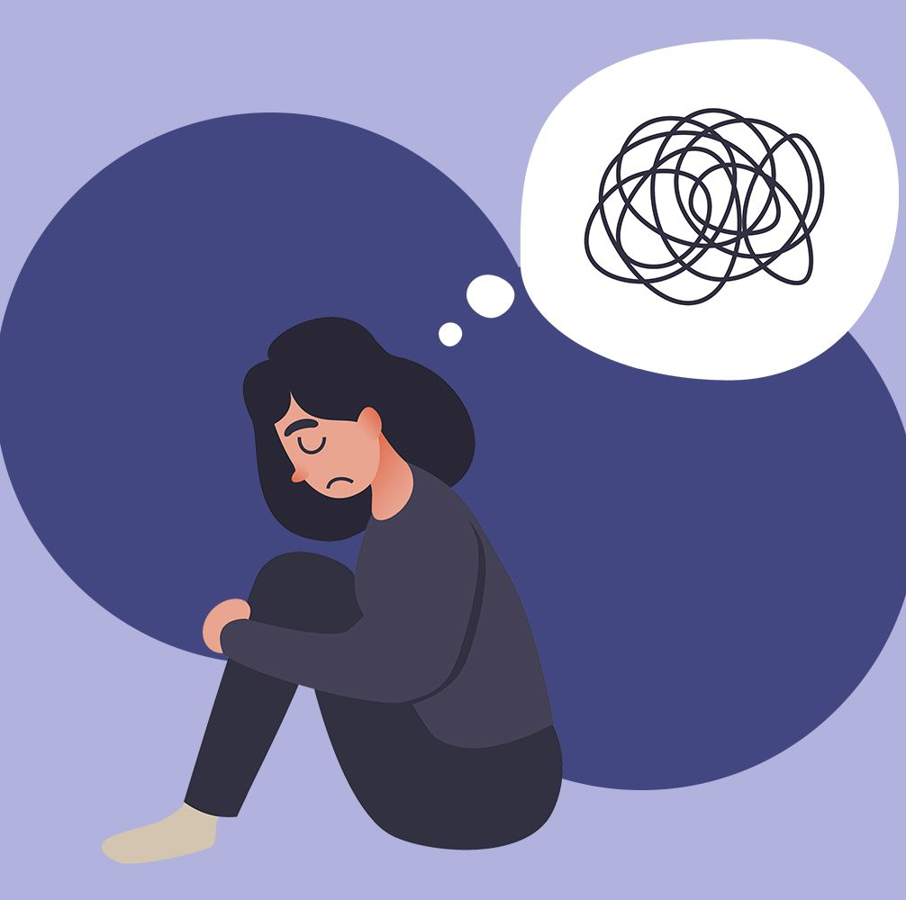

WHAT IS ANXIETY DISORDER
anxiety is a normal part of life. Many people worry about things such as health, money, or family problems. But anxiety
disorders involve more than temporary worry or fear. For people with an anxiety disorder, the anxiety does not go away and can get
worse over time. The symptoms can interfere with daily activities such as job performance, schoolwork, and relationships.
There are several types of anxiety disorders, including generalized anxiety disorder, panic disorder, social anxiety disorder, and
various phobia-related disorders.
1. Characterized by feelings of excessive uneasiness, worry, and fear,
2. amples include generalized anxiety disorder, post-traumatic stress disorder, social anxiety disorder, obsessive-compulsive disorder
and phobias
3. Occur in approximately 32 percent of 13- to 18-year-olds
4. In 2016, roughly 11 percent of adolescents ages 12-17 and 7 percent of children ages 6-11 had a current anxiety disorder diagnosis